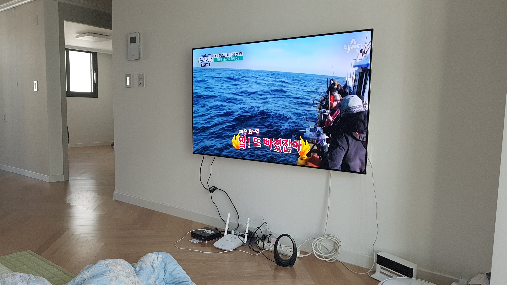
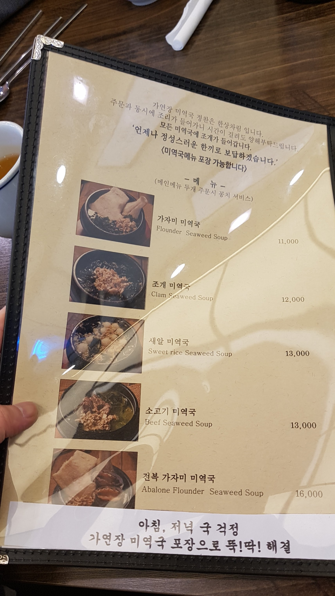
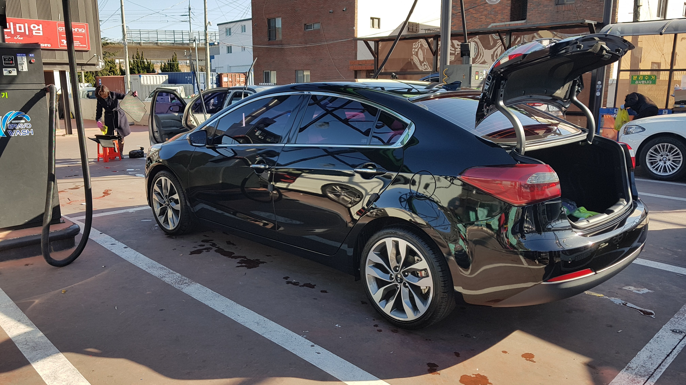
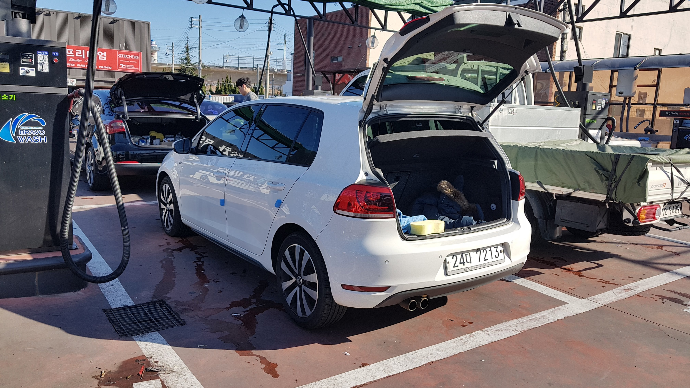
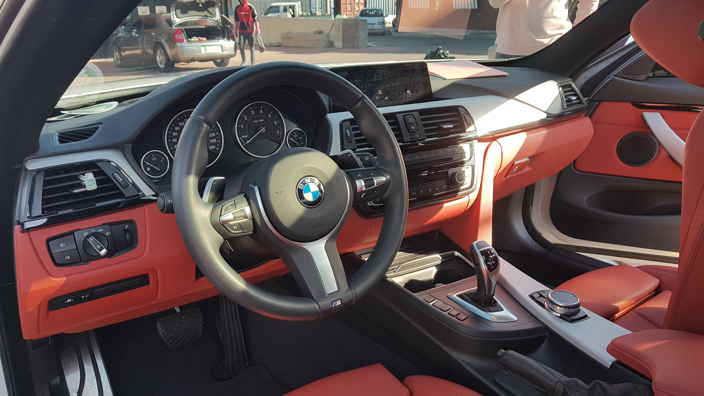
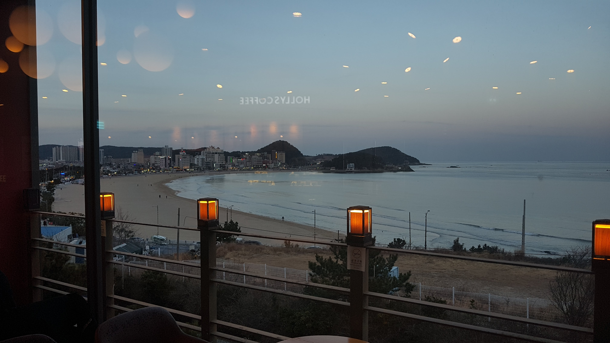

간만에 부산와서 학교 행님들하고 쉬는 시간, 아직 아무것도 없는 신혼집에서 도시어부 틀어놓고 멍 때리기.
남자들끼리 모이면 할게 별로 없다. 슬 배고파 오니 송정 바닷가 근처에 있는 미역국 맛집으로 이동.

처음 먹는다면 무조건 가자미 미역국 추천한다.
가자미 미역국, 미역안에 큰 가자미 두덩어리가 숨어있다.
송정 오면 자주 들르는데 가자미 미역국이 제대로 나온다. 보약먹는 느낌.
든든하게 미역국 먹고 뭐할까 하다가 다 같이 세차나 하기로 함.

xx 행님의 K3 GDI, 정확한 제원은 모르겠고 휠이 아마 18인치 였던 것 같은데 자세가 좋아서 골프 사기전에 탐냈던 차다.

이건 내차, 궁둥이가 참 이쁜 차인데 트렁크를 올려놔서 아쉽네
다른 xx 행님의 428i M팩, 이쁘긴 참 이쁜데 쿠페라 실용성에서는 많이 아쉽다.

탐나는 M핸들.
전형적인 BMW 인테리어, 인터리어만 봐도 넘치는 힘이 느껴지는 것 같다.

세차 끝. 어둑어둑해질 즘 송정 할리스에서 다 같이 커피 한 잔 하면서 멍 때리기로 일과 마무리.
알찬 하루다.
기록 끝.